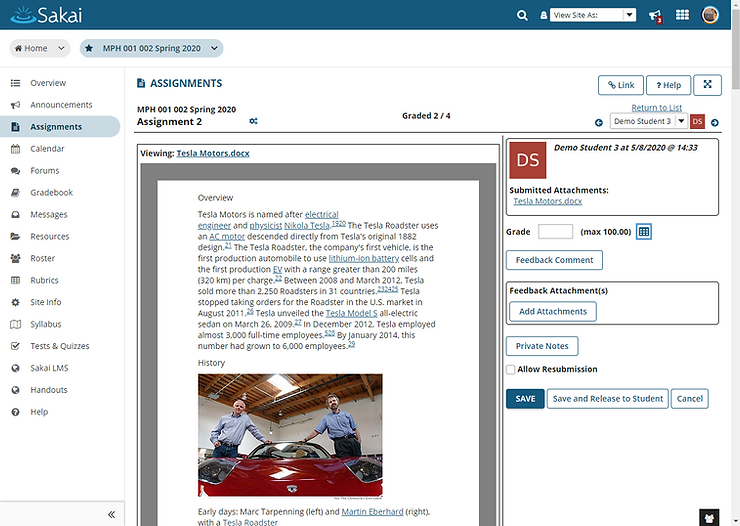
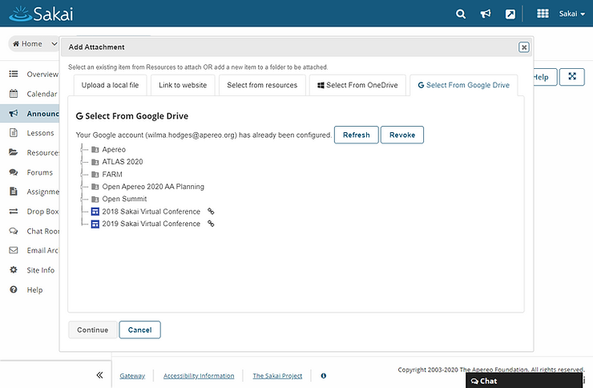
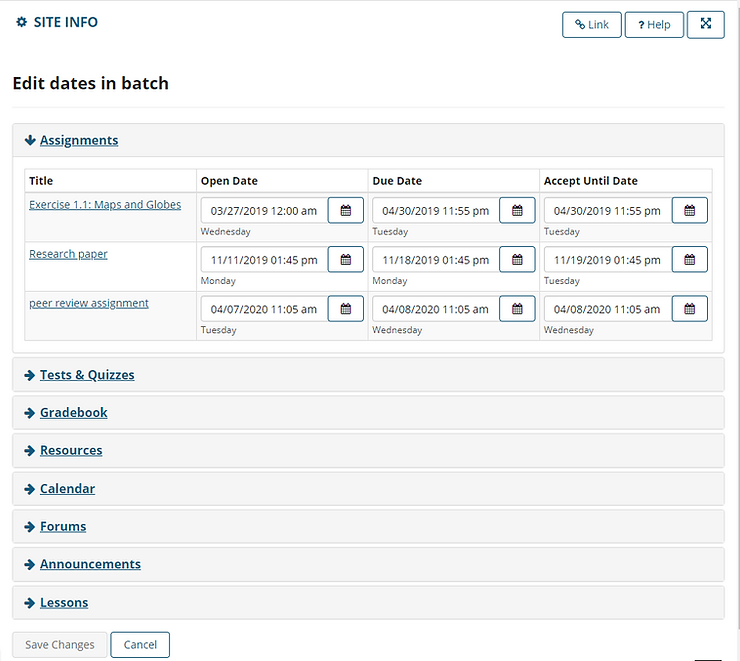
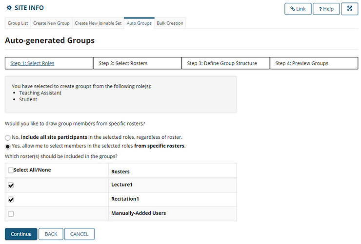
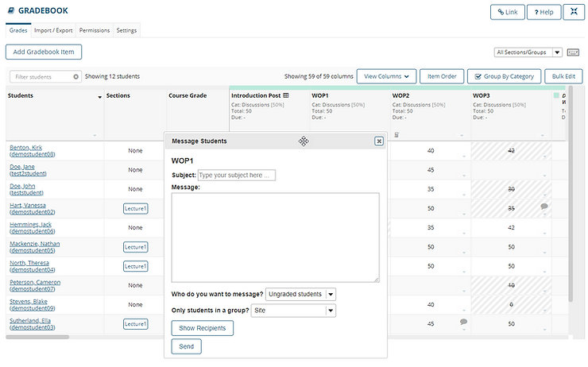
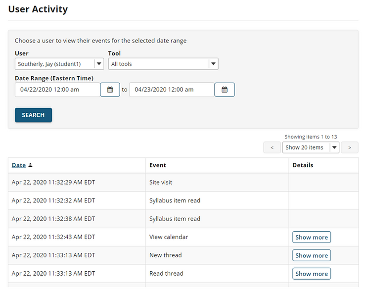
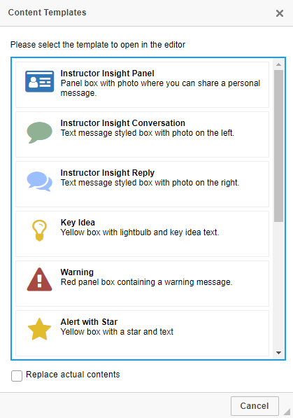
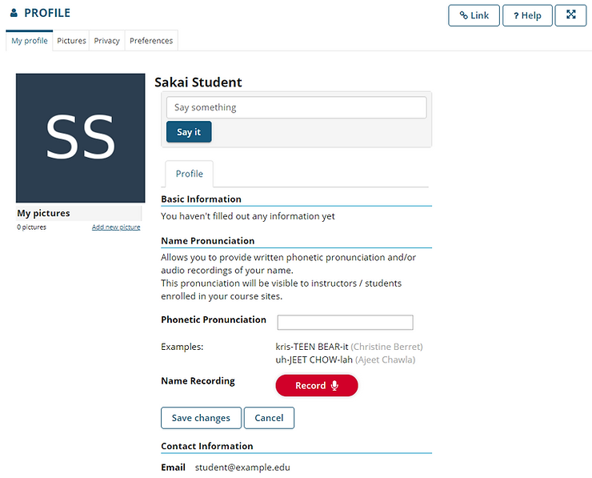
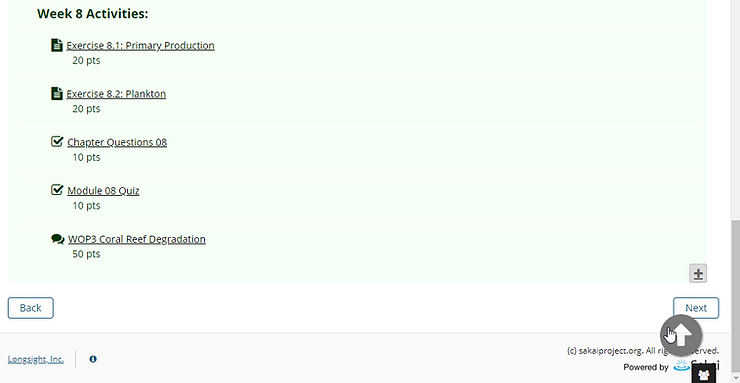

Sakai 20.0 is now available!
May 19, 2020
3 min read
Hot off of the virtual presses, Sakai 20 is now available and it is packed with great new features! Here are just a few highlights. Read on for more information.
- New grading workflow, with document preview.
- Integration with GoogleDrive and OneDrive.
- Ability for instructors to revise all course dates on a single page.
- Simplified automatic creation of groups for large courses.
- And more!
Sakai Grader
In Assignments, the all new Sakai Grader with document preview has arrived! Grader is a significant UI improvement over the legacy grading interface. It allows faculty to view and provide feedback on student submissions all within the browser, without having to download student files. You can even save private notes for other graders if there is more than one instructor or teaching assistant reviewing student work.

Cloud Storage Integrations
Cloud Storage integrations are now available for OneDrive and Google Drive within the Sakai file picker! This means that anywhere in the system where a user chooses a file to attach, you can now browse and select items from your cloud storage account.

Date Manager
A new Date Manager feature allows instructors to update all course due dates in a single page. This allows an easier transition when updating existing course content for a new semester.

Auto-Groups Wizard
Group creation just got easier with the Auto-Groups Wizard. You can now automatically generate groups within specific sections or rosters, which makes it easier to create groups of students for collaboration or project work within large courses.

Gradebook Enhancements
There are several new Gradebook enhancements, including:
- Equally weighted items within a weighted category - This means you can use the drop/keep lowest/highest item feature even when the items have different point values within a category.
- Full screen mode and resizable columns - You wanted more real estate in the gradebook, and we listened! Now you can make the spreadsheet view of the Gradebook full screen, so you can fit more columns and rows on your screen. You can also resize the width of columns to better fit the content in those cells.
- New Section column - Instructors with multiple sections in a course can now tell which section a student is enrolled in without having to filter the list to view one section at a time.
- Message Students directly from the Gradebook - Send a quick message to graded, ungraded, or all students directly from an individual gradebook item.

User Activity
The Statistics tool now has a new User Activity tab that provides instructors with more detailed information on individual students and their activity in the course. Also, students now get to see a snapshot of their total time spent in the course, number of visits, and average time per visit.

Rich Text Editor Templates
The rich text editor available throughout Sakai now includes a variety of pre-formatted templates that can be used to create attractively styled page content without any knowledge of HTML or CSS. The templates available include: Instructor Insight Panel, Instructor Insight Conversation, Instructor Insight Reply, Key Idea, Warning, Alert with Star, Learning Outcomes, Assignment Task, Discussion Forum Task, Reading Assignment, and Video Assignment.

Profile Name Pronunciation
The user Profile tool now allows students to record their own name pronunciation and save it as part of their personal information which shows up in the Roster and in other areas of Sakai. Some institutions are even using these name recordings as part of their commencement planning!

Jump to the Top Link
A new "To the top" button that appears in the lower right of the screen when you reach the bottom of a page makes scrolling back up to the top a snap. Goodbye scroll fatigue!

These improvements and many more are all available now. See ourcomplete feature summaryfor more information.
A HUGE THANK YOU goes out to everyone involved with developing, testing, and documenting the latest release. Even during a pandemic, our world-wide community has kept the momentum going and produced another Sakai release packed with exciting new features and enhancements. That is a tremendous accomplishment during these unprecedented times!